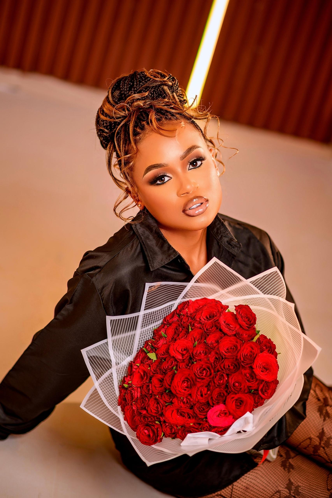

About me
I am Namukwaya Vanessa , am a Ugandan by nationality .I live in Lubaga kampala Centre.
I am an enthusiastic computer student at WITU , training with passion for creating
beautiful and functional digital experience.
I enjoy learning new tchnologies and building new real projects to improve my skills
Involving myself in life saving technologies is my passion.
As a character who gains power through technology, the love to solve realistic problems
with tech grows in me everyday .
As it's said codes neaver lies but comments sometimes do.
My goal is to continue learning and contribute innovative solutions to real-world challenges